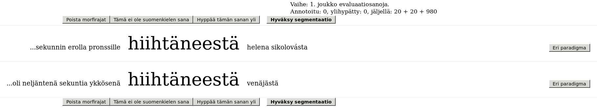

Esitä mahdolliset kysymykset osoitteeseen stig-arne.gronroos@aalto.fi .
Tarkoituksena on kerätä sanamuotojen morfologisia pintasegmentaatioita, eli jakaa annetut sanat morfeemien pintamuotoja vastaaviin osiin.
Lisäksi jokaiseen morfiin on tarkoitus liittää yksi kolmesta kategoriasta: etuliite (prefiksi, PRE), sanavartalo (stem, STM), tai jälkiliite (suffiksi, SUF). (Yhdys)sanassa voi olla useita sanavartaloita. Sanavartaloa voi edeltää monta etuliitettä ja seurata monta jälkiliitettä.
Prefikseiksi on tarkoitus merkitä sanavartaloa edeltävät sitä muokkaavat morfit. Toisessa sanamuodossa samanmuotoinen morfi saattaa olla sanavartalon roolissa. Erityisesti tulee huomoida, että prefiksiä ei voi välittömästi seurata suffiksi, joten näissä tapauksissa edeltävän morfin on oltava sanavartalo eikä prefiksi, vaikka samanmuotoinen morfi jossain toisessa sanamuodossa olisi esiintynyt prefiksinä. Suffikseilla tarkoitetaan sekä taivutus- että johdospäätteitä.
Annotoitavat sanamuodot esitetään lausekonteksteissa. Kontekstien tarkoitus on helpottaa morfologisesti monitulkintaisten sanamuotojen analysointia.
Kontekstit esitetään muokatussa, tokenisoidussa muodossa. Lausekontekstit jossa kuvien (Fig 2-4) esimerkkisana esiintyy olivat alkuperäisessä muodossaan: Viiden kilometrin kilpailussa hän jäi neljänneksi 0,08 sekunnin erolla pronssille hiihtäneestä Helena Sikolovásta. ja Norjan jälkeen Italia oli neljäntenä - 2,3 sekuntia ykkösenä hiihtäneestä Venäjästä. Huomaa, että tokenisoinnin jälkeen isot kirjaimet on muunnettu pieniksi kirjaimiksi, ja kokonaan numeroista ja/tai välimerkeistä koostuvat osat on poistettu. Lauseet on myös typistetty mahtumaan paremmin ruudulle.
Tutkimuskysymys on miten nopeasti puoliohjatun Morfessorin avulla saa aikaan kohtuullisen tarkkaa morfologista pilkontaa uudelle kielelle. Toteutustapa on active learning -tyylinen, eli annotointi tapahtuu useassa iteraatiossa, niin että seuraavan iteraation annotoitavat sanat valitaan käyttäen hyväksi edellisen mallin tuloksia. Iteraatioiden lukumäärää ei ole päätetty etukäteen, vaan lopettaminen tapahtuu kun malli on oppinut riittävän hyvin tai aika loppuu kesken.
Koska emme tiedä kuinka nopeata annotointi on, iteraatiossa annotoitavat sanat on jaettu kolmeen vaiheeseen:
Annotoi joka iteraatiossa vähintään 100 sanaa (vaiheet 1 ja 2), koska vasta toisen vaiheen päätyttyä voimme aloittaa seuraavan mallin opettamisen.
 Fig 1: Oikeassa ylänurkassa näkyy iteraation vaiheet.
Tässä ollaan iteraation alussa: yhtään sanaa ei ole vielä annotoitu,
eikä yhdenkään sanan yli ole hypätty.
Jäljellä on 20 sanaa ensimmäisessä evaluaatiosanavaiheessa, 20 sanaa opetussanavaiheessa,
ja lisäksi löytyy vielä 980 potentiaalista evaluaatiosanaa.
Kaikkia evaluaatiosanoja ei toki ole tarkoitus annotoida tällä istumalla.
(Esimerkissä oli listan pituutena 20 eikä nykyinen 50).
Fig 1: Oikeassa ylänurkassa näkyy iteraation vaiheet.
Tässä ollaan iteraation alussa: yhtään sanaa ei ole vielä annotoitu,
eikä yhdenkään sanan yli ole hypätty.
Jäljellä on 20 sanaa ensimmäisessä evaluaatiosanavaiheessa, 20 sanaa opetussanavaiheessa,
ja lisäksi löytyy vielä 980 potentiaalista evaluaatiosanaa.
Kaikkia evaluaatiosanoja ei toki ole tarkoitus annotoida tällä istumalla.
(Esimerkissä oli listan pituutena 20 eikä nykyinen 50).
Ensin kysytään (kaikille yhteistä) käyttäjätunnus/salasana yhdistelmää. Seuraavaksi pyydetään syöttämään sähköpostiosoite. Kenttään syötettyä tekstiä käytetään tunnistamaan eri annotoijat ja pitämään kirjaa edistymisestä. Oikeastaan mikä tahansa uniikki teksti kävisi, mutta sähköpostiosoitteen avulla voin ongelmatapauksissa ottaa yhteyttä.
Jos keskeytät annotoinnin välillä, voit jatkaa siitä mihin jäit käyttämällä samaa säkhköpostiosoitetta uudestaan.
Sanan annotointi on jaettu kahteen osaan: segmentoinnin syöttämiseen ja tagien syöttämiseen.
 Fig 2: Segmentointityökalu. Sanaan ei ole lisätty morfirajoja vielä.Segmentointi aloitetaan segmentoimattomasta (evaluaatiosanojen tapauksessa) sanamuodosta tai ehdotuksesta (opetussanojen tapauksessa). Voimassa olevat morfien rajat on merkitty harmaalla " + " symbolilla. Molemmissa tapauksissa muokkaaminen tapahtuu samalla tavalla: Rajaa edeltävän kirjaimen klikkaaminen lisää rajan jos sitä ei ennestään ole, tai poistaa rajan jos sellainen jo on. Ennen lisäämistä plus-merkki on vihreä, ja ennen poistamista punainen.
 Fig 3: Käyttäjä on lisäämässä morfirajaa klikkaamalla e-kirjainta.
Yksi raja on lisätty aiemmin.
Fig 3: Käyttäjä on lisäämässä morfirajaa klikkaamalla e-kirjainta.
Yksi raja on lisätty aiemmin.
 Fig 4: Käyttäjä on poistamassa morfirajaa.
Fig 4: Käyttäjä on poistamassa morfirajaa.
Kaikki ruudulla olevat rivit (kaikki sanan esiintymät eri konteksteissa), segmentoidaan samalla tavalla, eli riittää klikata yhtä sanoista. Jos eri konteksti-riveillä on eri lemmojen taivutusmuotoja, jotka tulee segmentoida eri tavoilla, klikkaa oikeassa laidassa olevaa "Eri paradigma" nappia näiden rivien kohdalta. Rivit poistetaan näytöltä, eikä sen jälkeen tehdyt annotoinnit enää vaikuta niihin. Myöhemmin nämä poistetut kontekstit näytetään uudelleen.
Jos ehdotettu segmentaatio on täysin pielessä, voit painaa "Poista morfirajat" -nappia, joka poistaa kaikki ruudulla olevat rajat helpottaen alusta aloittamista.
Korpuksessa on jonkun verran melua, pääasiassa vieraskielisiä sanoja, kirjainsekvenssejä ja mahdollisesti väärinkirjoituksia. Jos järjestelmä pyytää annotoimaan tällaisen kohdekieleen kuulumattoman sanan, paina "Tämä ei ole saamenkielen sana" -nappia. Jos epäilet väärinkirjoitusta, tarkista vielä lausekontekstia apuna käyttäen ettei kyseessä ole vain harvinainen sanamuoto jota et heti tunnista.
Työkalussa on myös "Hyppää yli" -nappi. Älä väärinkäytä tätä kaikkien vaikeiden sanojen yli hyppäämiseen (koska muuten dataan tulee vääristymää helppoja sanoja kohtaan). Tarkoituksena on että jos törmäät sanaan, jonka segmentoinnin haluat tarkistaa ennen annotaation syöttämistä, mutta haluat sitä ennen jatkaa muiden sanojen syöttämistä, tällä napilla se onnistuu.
Kun työkalussa on oikea segmentaatio ja vain oikeat kontekstirivit, paina "Hyväksy segmentaatio" -nappia.
 Fig 5: Segmentaatiotyökalun toimintonapit
Fig 5: Segmentaatiotyökalun toimintonapit
Seuraavaksi edellä syötetyn segmentaation morfeille annetaan tagit. Poikkeuksellisesti tämä askel sivuutetaan jos segmentaatiossa oli vain yksi morfi, koska sen on oltava sanavartalo.
Kaikki morfit on alustavasti merkattu sanavartaloiksi (STM). Sinun tarvitsee siis vain merkata prefiksit ja suffiksit. "Hyväksy tagit" -nappi deaktivoituu jos tagisekvenssi ei ole sallittu (prefiksiä ei saa välittömästi seurata suffiksi).
Jos huomaat, että segmentaatio olikin väärin, voit vielä painaa "Takaisin segmentaatioon" muuttaaksesi sitä.
 Fig 6: Tagi-työkalu
Fig 6: Tagi-työkalu
 Fig 7: Kielletty tagisekvenssi
Fig 7: Kielletty tagisekvenssi
Kiitos siitä että osallistut datankeruuseen! - Stig-Arne Grönroos